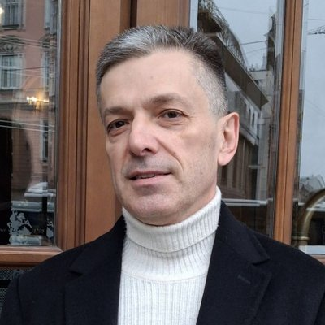

Глобальний Церковний Рух
Разом із Церквами та партнерами несемо Євангелію Надії всім верствам українського суспільства.
В умовах російсько-української війни — разом з Церквами та партнерськими організаціями, з метою розвитку та примноження Церков — ми служимо як учасники помісних церковних команд усьому спектру українського суспільства: дітям, підліткам, молоді, самотнім, сім’ям, військовим, родинам військових, ВПО.

Служіння разом із помісними Церквами
Допомагаємо людям іти за Христом і бути частиною Церкви
Стати учнями Ісуса Христа.
Приєднатися до діючої Церкви або заснувати Нову Церкву — у партнерстві з діючою Материнською Церквою.
Зростати в пізнанні Христа.
Служити для розвитку і примноження Церкви.
Ще один шлях розвитку і примноження Церков
У час повномасштабної війни Бог додав ще один шлях розвитку і примноження Церков — капеланське служіння. Капелан — це священнослужитель або пастор Церкви, який служить за межами Церкви, отримавши мандат від Церкви.
Військове капеланство
У військових шпиталях, тренувальних центрах і на полігонах, у місцях дислокації підрозділів, у військових навчальних закладах, а також для родин військових.
Лікарняне капеланство
У медичних закладах та лікарнях.
Поліцейське капеланство
У відділках поліції, на робочих місцях поліцейських, а також для родин поліцейських.
Партнерство
Наше служіння реалізовується виключно в партнерстві з церковними об’єднаннями, Церквами, громадськими та релігійними організаціями, християнськими та світськими навчальними закладами, державними установами, місіонерами, які розділяють наші цінності розвитку і примноження Церков та служіння українському суспільству.
Де ми служимо
- Борислав
- Львів
- Тернопіль
- Рівне
- Івано-Франківськ
- Рокитне
- Вінниця
- Київ
- Тарасівка
- Полтава
- Черкаси
- Кам’янське
- Одеса
- Харків
- Снігурівка
Поточні проєкти служіння
Нова Церква в Кам’янському
Заснування другого покоління Церкви «Світло Господнє» в м. Кам’янське.
Капеланство в шпиталях
Капеланське служіння пораненим Захисникам у шпиталях Лозової, Чернігова та Полтави.
Адаптація мобілізованих
Капеланське служіння адаптації для мобілізованих чоловіків у Рівненській та Полтавській областях.
Капеланство для кадетів
Капеланське служіння кадетам Військової кафедри НУ «Полтавська політехніка».
Служіння жінкам
Проєкт служіння жінкам у Харкові, Рівному та Тернополі.
Служіння підліткам
Проєкт служіння підліткам у Львові.
Розвиток і примноження Церков
У Києві, Черкасах, Вінниці, Полтаві, Тернополі, Рівному, Львові, Івано-Франківську, Одесі, Рокитному, Харкові та Кам’янському.
Ветеранський, капеланський і волонтерський ХАБ
ХАБ у Рокитному та в Полтаві.
Як долучитися
У нашій команді ми раді вітати волонтерів, а також представників громадських організацій, навчальних закладів, місійних організацій і державних установ.
Обговорити співпрацю →Ми шукаємо волонтерів, які:
- представляють конкретні помісні Церкви в Україні або за кордоном;
- є частиною пасторської церковної команди;
- мають бачення розвитку і примноження своєї Церкви;
- можуть служити або вже служать (від Церкви) зраненому війною українському суспільству;
- відкриті до міжконфесійної співпраці.

Владислав Возняк
Лідер напрямку Глобальний Церковний Рух
Надіслати запит до команди ГЦР
Розкажіть про свою Церкву чи організацію — і ми обговоримо, як можемо служити разом.